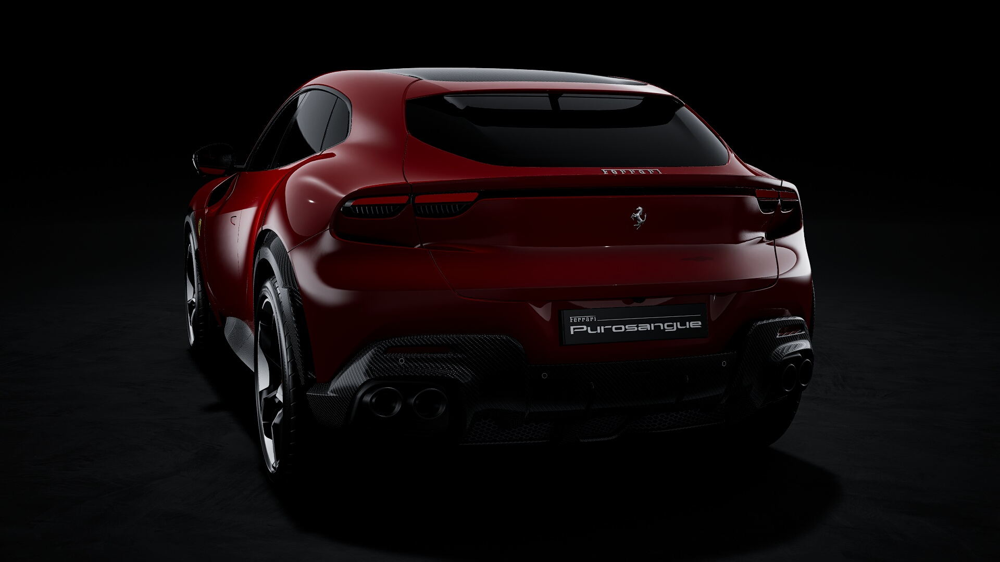
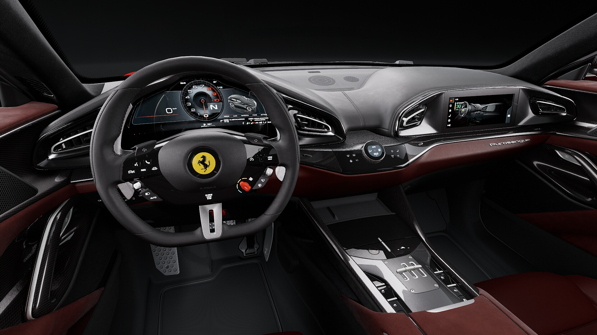
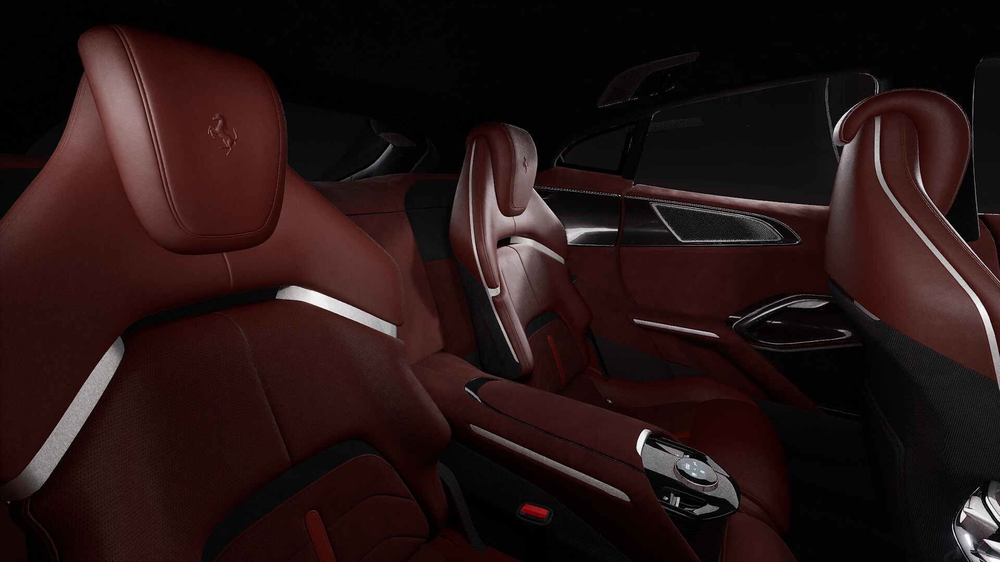

Présentation
La Ferrari Purosangue est le tout premier SUV de la marque au cheval cabré, marquant une révolution dans l’histoire de Ferrari. Conçu pour allier performance, luxe et polyvalence, il redéfinit les standards du segment en offrant une expérience de conduite digne d’une supercar, tout en conservant un confort exceptionnel pour les longs trajets.
Caractéristiques
- 🚗 Puissance : 725 chevaux
- ⚡ Accélération : 0-100 km/h en 3.3 sec
- 🏎 Vitesse Max : 310 km/h
- 🛠 Transmission : Automatique
- 🎨 Couleurs disponibles : Rosso Mugello 325
Galerie Photos


